Tipos de plots mais utilizados
As visualizações do Matplotlib são construídas a partir de matrizes NumPy, neste capítulo veremos alguns dos tipos de gráficos mais utilizados. Para solucionar maior parte do problema em descobrir que tipo de plotagem usar, primeiro é ter uma ideia geral dos dados para em seguida ver qual plotagem melhor se adapta. Faremos alguns experimentos!
Antes de continuar, vamos precisar do NumPy para gerar alguns dados para nossas plotagens:
import numpy as np
x = np.linspace(0, 10, 100)
x[:10]
array([0. , 0.1010101 , 0.2020202 , 0.3030303 , 0.4040404 ,
0.50505051, 0.60606061, 0.70707071, 0.80808081, 0.90909091])
Line
Gráfico de linha é o tipo padrão de visualização no Matplotlib, geralmente, a menos que seja configurado de outra forma, os gráficos começarão como linhas.
fig, ax = plt.subplots()
ax.plot(x, x**2);
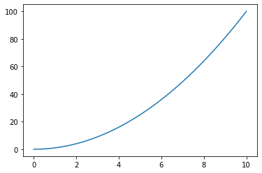
Scatter
Outro tipo de gráfico bastante usado é o scatter ou gráfico de dispersão. Lembra um pouco o gráfico de linhas, mas é representado por pontos.
fig, ax = plt.subplots()
ax.scatter(x, np.sin(x));
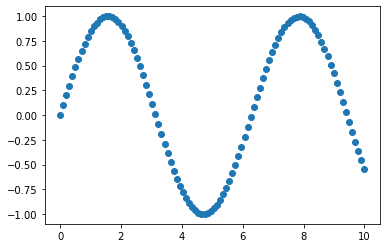
Bar
Um gráfico de barras apresenta barras retangulares com comprimentos e alturas proporcionais aos valores que representam. Pode ser plotado horizontalmente ou verticalmente. Bastante utilizado em comparações entre dados.
produtos = {"Pão": 10,
"Leite": 8,
"Sorvete": 12}
fig, ax = plt.subplots()
ax.bar(produtos.keys(), produtos.values())
ax.set(title="Lista de produtos", ylabel="Preço");
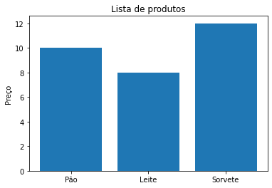
fig, ax = plt.subplots()
ax.barh(list(produtos.keys()), list(produtos.values()));
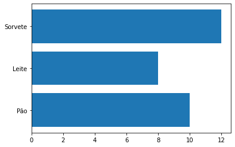
Hist
Histograma pode ser um ótimo passo para entender um conjunto de dados.
A função randn do NumPy gera valores aleatórios com uma distribuição normal. Vamos gerar dados com essa função e plotar em um gráfico de histograma:
x = np.random.randn(1000)
fig, ax = plt.subplots()
ax.hist(x);

Subplots
Já vimos uma breve apresentação de subplots, agora veremos um pouco mais de recursos dessa função. Vamos criar vários plots em uma só figura. Na primeira opção vamos plotar os dados em cada axis da figura:
fig, ((ax1, ax2), (ax3, ax4)) = plt.subplots(nrows=2,
ncols=2,
figsize=(10, 5))
ax1.plot(x, x/2); #line
ax2.scatter(np.random.random(10), np.random.random(10)) #scatter
ax3.bar(produtos.keys(), produtos.values()) #bar
ax4.hist(np.random.randn(1000)); #hist
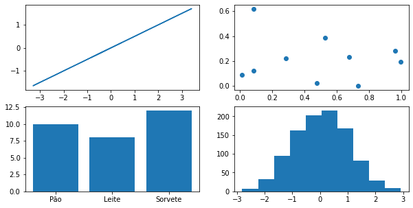
Na segunda opção usaremos um índice para plotar os dados, particularmente prefiro a primeira alternativa:
fig, ax = plt.subplots(nrows=2, ncols=2, figsize=(10, 5))
ax[0, 0].plot(x, x/2) #line
ax[0, 1].scatter(np.random.random(10), np.random.random(10)) #scatter
ax[1, 0].bar(produtos.keys(), produtos.values()) #bar
ax[1, 1].hist(np.random.randn(1000)); #hist
Plotando dados com Pandas
Veremos agora como utilizar o método pd.plot() em um DataFrame para plotar diretamente com Pandas. Primeiro vamos importar o Pandas e alguns dados para o nosso DataFrame:
import pandas as pd
venda_de_carros = pd.read_csv("venda-de-carros-formatado.csv")
venda_de_carros.head()
| Fabricante | Cor | Quilometragem | Portas | Preco | |
|---|---|---|---|---|---|
| 0 | Toyota | Branco | 150043 | 4 | 24000.0 |
| 1 | Honda | Vermelho | 87899 | 4 | 25000.0 |
| 2 | Toyota | Azul | 32549 | 3 | 27000.0 |
| 3 | BMW | Preto | 11179 | 5 | 122000.0 |
| 4 | Nissan | Branco | 213095 | 4 | 13500.0 |
Uma boa ideia seria adicionar uma coluna nova no DataFrame com as datas das vendas dos carros. Vamos criar um range de datas com a função date_range do Pandas e adicionar uma data para cada linha do DataFrame:
venda_de_carros["Data da venda"] = pd.date_range("1/1/2021", periods=len(venda_de_carros))
venda_de_carros.head()
| Fabricante | Cor | Quilometragem | Portas | Preco | Data da venda | |
|---|---|---|---|---|---|---|
| 0 | Toyota | Branco | 150043 | 4 | 24000.0 | 2021-01-01 |
| 1 | Honda | Vermelho | 87899 | 4 | 25000.0 | 2021-01-02 |
| 2 | Toyota | Azul | 32549 | 3 | 27000.0 | 2021-01-03 |
| 3 | BMW | Preto | 11179 | 5 | 122000.0 | 2021-01-04 |
| 4 | Nissan | Branco | 213095 | 4 | 13500.0 | 2021-01-05 |
Faremos mais um ajuste antes de plotar, vamos criar mais uma coluna, dessa vez com a soma cumulativa das vendas, para isso utilizaremos a função cumsum():
venda_de_carros["Total"] = venda_de_carros["Preco"].cumsum()
venda_de_carros.head()
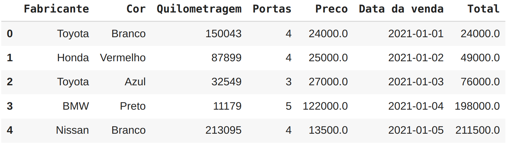
Pandas plot line
Finalmente vamos gerar o nosso gráfico, a função plot do Pandas espera como parâmetro os valores para o eixo x e y, respectivamente vamos adicionar a data das vendas no eixo x e o total vendido no y:
venda_de_carros.plot(x="Data da venda", y="Total");
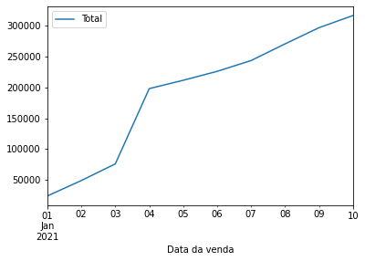
Pandas plot scatter
A função plot do Pandas pode gerar vários tipos de gráfico, veremos agora a opção para Scatter como fizemos com Matplotlib. Um bom exemplo para nosso DataFrame seria plotar um gráfico de correlação entre preço e quilometragem percorrida. Na função plot precisamos informar no parâmetro kind o tipo de gráfico, que nesse exemplo é scatter:
venda_de_carros.plot(x="Quilometragem", y="Preco", kind="scatter");
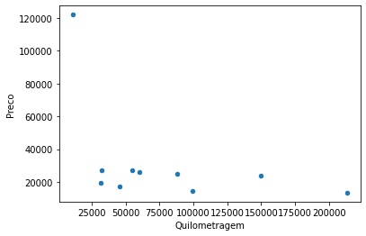
Pandas plot bar
Temos também a opção para bar plot, da mesma forma que fizemos com scatter, podemos alterar o kind para bar. Vamos plotar uma pequena comparação entre fabricante e quilometragem:
venda_de_carros.plot(x="Fabricante", y="Quilometragem", kind="bar");
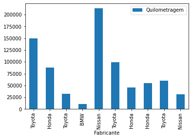
Pandas plot hist
Não poderia deixar de mencionar a opção para histograma kind="hist".
Uma boa maneira de plotar histograma com Pandas é selecionar uma coluna específica:
venda_de_carros["Quilometragem"].plot(kind="hist");
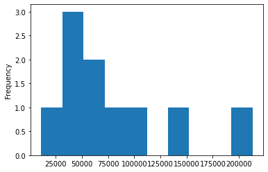
Para gráficos mais complicados, usaremos o método OO demonstrado com Matplotlib. No restante do capítulo focaremos em gráficos mais complexos.
Customizando os seus plots
Veremos agora como construir gráficos bem elaborados utilizando vários recursos da Matplotlib. Vamos utilizar outro dataset, um de doenças cardíacas, com muitas colunas e dados.
df = pd.read_csv("heart-disease.csv")
df.head()
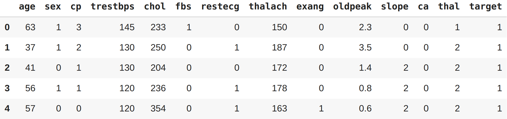
Vamos iniciar nosso plot por uma análise de dados em pacientes com mais de 50 anos. Criaremos um filtro para em seguida plotar utilizando as opções da Matplotlib ajustando o tamanho da figura combinando com o plot do Pandas:
mais_de_50 = df[df["age"] > 50]
fig, ax = plt.subplots(figsize=(10, 6))
mais_de_50.plot(kind="scatter",
x="age",
y="chol",
c="target",
ax=ax)
ax.set_xlim([45, 100]);
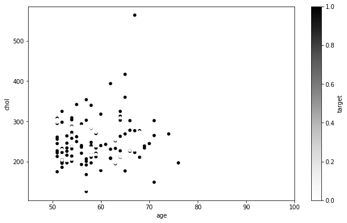
No eixo y temos o colesterol e no x a idade do paciente. Ao lado temos uma escala em cinza chamada target, esses valores são 0 ou 1 e são utilizados para classificar se o paciente é um alvo para a doença cardíaca ou não (1=sim, 0=não). Veremos esse dataset com mais detalhes nos capítulos de Machine Learning. A opção set_xlim foi adicionada para limitar a idade dos pacientes entre 45 e 100, já que o nosso filtro é para pacientes acima de 50 anos.
Faremos agora um plot um pouco mais complicado, dessa vez utilizando apenas parâmetros da Matplotlib. Utilizaremos o mesmo filtro de idade:
fig, ax = plt.subplots(figsize=(10, 6))
scatter = ax.scatter(mais_de_50["age"],
mais_de_50["chol"],
c=mais_de_50["target"])
ax.set(title="Doença cardíaca e níveis de colesterol",
xlabel="Idade",
ylabel="Colesterol")
ax.legend(*scatter.legend_elements(), title="Alvo");
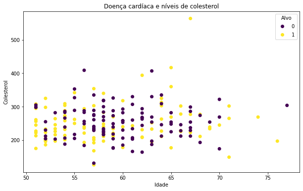
Analisando por partes para entender o que fizemos aqui: primeiro criamos um objeto do tipo subplots e definimos o tamanho final da nossa imagem, no caso (10x6). Na configuração dos axes ou ax (consulte anatomia de um gráfico) escolhemos o tipo de plot, no caso scatter e preenchemos os valores dos eixos, x e y inserindo respectivamente as colunas de idade e colesterol. O último parâmetro na configuração de scatter o c é um marcador de cores que recebe como argumento valores em escala ou sequência de números, que serão mapeados para cores, nesse caso inserimos a coluna target que possui apenas dois tipos de valores 0 ou 1 para exibir roxo nos casos onde o paciente não é um possível alvo de uma doença cardíaca e amarelo para os casos onde o paciente é um possível alvo.
A função set() permite configurar o título da nossa imagem e os labels dos eixos x e y, respectivamente idade e colesterol. E a última função inserida legend() foi utilizada para configurar a nossa legenda que aparece no canto superior direito com o título de Alvo.
Vamos customizar um pouco mais ? E se quiséssemos por uma linha horizontal determinando a média de colesterol dos casos avaliados ? Vamos ao plot:
# Criando o plot
fig, ax = plt.subplots(figsize=(10, 6))
# Plotando os dados
scatter = ax.scatter(mais_de_50["age"],
mais_de_50["chol"],
c=mais_de_50["target"])
# Customizando o plot
ax.set(title="Doença cardíaca e níveis de colesterol",
xlabel="Idade",
ylabel="Colesterol")
ax.legend(*scatter.legend_elements(), title="Alvo")
# Adicionando a linha média horizontal para colesterol
ax.axhline(mais_de_50["chol"].mean(),
linestyle="--");
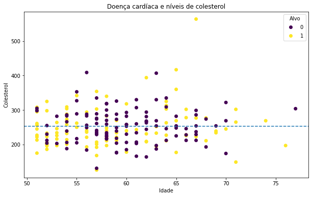
A novidade aqui foi a função axhline() para gerar uma linha horizontal, em seus parâmetros informamos apenas a coluna de onde a função deve capturar os dados (no nosso caso a média desses dados) e escolhemos o estilho da linha.
Adicionando outro plot ao existente
Até o momento o nosso plot exibe a distribuição de casos de doenças cardíacas por níveis de colesterol. Vamos adicionar outro plot para exibir os níveis máximos de frequência cardíaca.
# Criando o plot
fig, (ax0, ax1) = plt.subplots(nrows=2,
ncols=1,
sharex=True,
figsize=(10, 10))
# Adicionando os dados para ax0
scatter = ax0.scatter(mais_de_50["age"],
mais_de_50["chol"],
c=mais_de_50["target"])
# Customizando ax0
ax0.set(title="Doença cardíaca e níveis de colesterol",
xlabel="Idade",
ylabel="Colesterol")
ax0.legend(*scatter.legend_elements(), title="Alvo")
# Adicionando a linha média horizontal para colesterol em ax0
ax0.axhline(mais_de_50["chol"].mean(),
linestyle="--")
# Adicionando os dados para ax1
scatter = ax1.scatter(mais_de_50["age"],
mais_de_50["thalach"],
c=mais_de_50["target"])
# Customizando ax1
ax1.set(title="Doença cardíaca e níveis máximos de frequência cardíaca",
xlabel="Idade",
ylabel="Frequência cardíaca máxima")
ax1.legend(*scatter.legend_elements(), title="Alvo")
# Adicionando a linha média para frequência cardíaca
ax1.axhline(mais_de_50["thalach"].mean(),
linestyle="--")
# Título da figura
fig.suptitle("Análise de Doenças Cardíacas", fontsize=16, fontweight="bold");
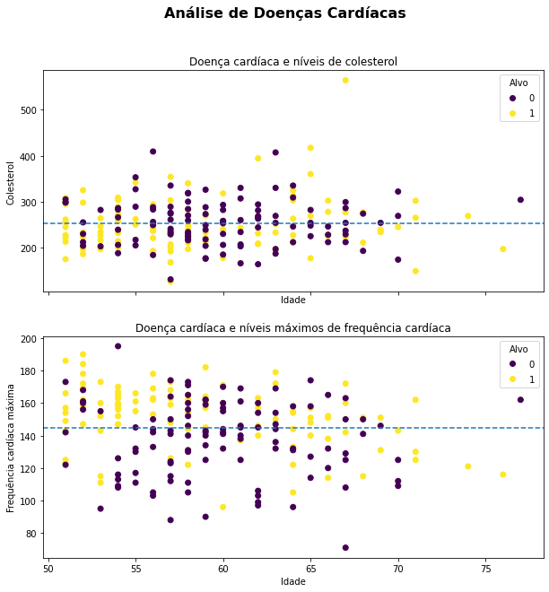
Aqui não fizemos nada muito especial, apenas utilizamos o recurso de subplots visto anteriormente para plotar mais de um gráfico na mesma figura. Adicionamos também algumas poucas configurações extras, como: a disposição dos plots na figura ocupando 2 linhas e 1 coluna (nrows e ncols), compartilhamos o eixo x entre os dois plots utilizando a opção sharex, já que o range de idade para ambos é o mesmo. E adicionamos um título mais destacado (personalizando o tamanho e estilo da fonte) para a figura como um todo.
Para finalizar vamos alterar um pouco o estilo do gráfico e mudar algumas cores. O estilo pode ser trocado por meio da função style.use() e para as cores, vamos explorar a opção cmap abreviação para color map:
# Definindo um novo estilo com grid
plt.style.use("seaborn-whitegrid")
# Criando o plot
fig, (ax0, ax1) = plt.subplots(nrows=2,
ncols=1,
sharex=True,
figsize=(10, 10))
# Adicionando os dados para ax0
scatter = ax0.scatter(mais_de_50["age"],
mais_de_50["chol"],
c=mais_de_50["target"],
cmap='winter')
# Customizando ax0
ax0.set(title="Doenças cardíacas e níveis de colesterol",
ylabel="Colesterol")
ax0.set_xlim([50, 80])
ax0.legend(*scatter.legend_elements(), title="Alvo")
# Adicionando a linha média horizontal para colesterol em ax0
ax0.axhline(mais_de_50["chol"].mean(),
color="r",
linestyle="--")
# Adicionando os dados para ax1
scatter = ax1.scatter(mais_de_50["age"],
mais_de_50["thalach"],
c=mais_de_50["target"],
cmap='winter')
# Customizando ax1
ax1.set(title="Doença cardíaca e níveis máximos de frequência cardíaca",
ylabel="Frequência cardíaca máxima",
xlabel="Idade",
ylim=[60, 200])
ax1.legend(*scatter.legend_elements(), title="Alvo")
# Adicionando a linha média para frequência cardíaca
ax1.axhline(mais_de_50["thalach"].mean(),
color="r",
linestyle="--")
# Título da figura
fig.suptitle("Análise de Doenças Cardíacas", fontsize=16, fontweight="bold");
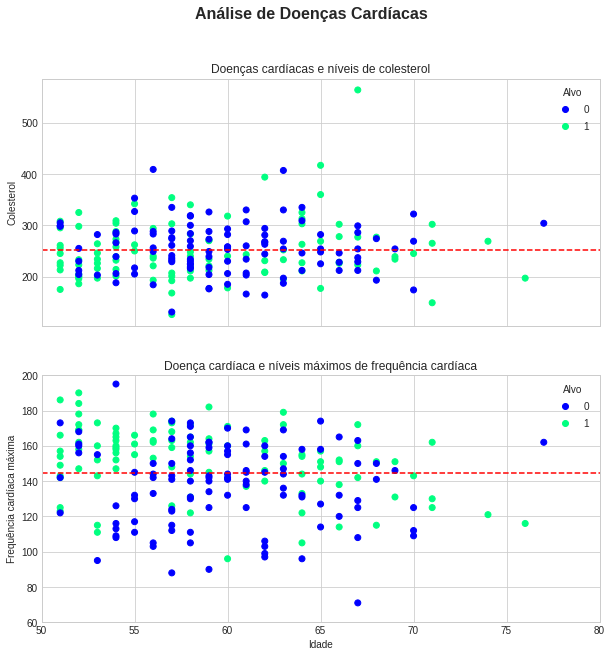
Temos agora um gráfico completamente diferente, um pouco mais amigável visualmente. Mais uma vez vamos entender por partes as pequenas diferenças:
primeiro escolhemos um novo estilo para o plot com a opção style.use("seaborn-whitegrid") esse estilo deixou o plot menos grosseiro, além de ter inserido um grid nos gráficos. Ao configurar os dados para os plots ax0 e ax1, adicionamos a opção cmap ou color map para definir o esquema de cores dos dados relacionados ao alvo, ou seja cmap está alterando as cores da opção c.
Já na customização dos plots adicionamos limites para o eixo x com set_xlim indo de 50 anos até 80 anos. No plot ax1 fizemos o mesmo, mas para o eixo y utilizando ylim e limitamos os valores que representam a frequência cardíaca entre 60 e 200. Por fim mudamos também as cores das linhas horizontais que marcam as médias de colesterol e frequência cardíaca respectivamente, utilizando a opção color="r" trocamos para cor vermelha.
WIP